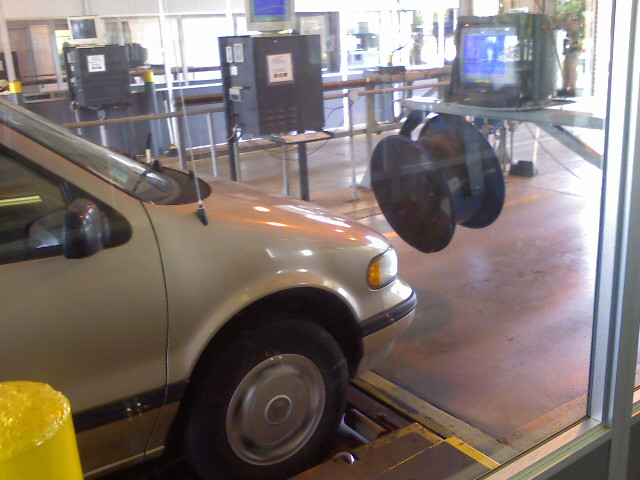
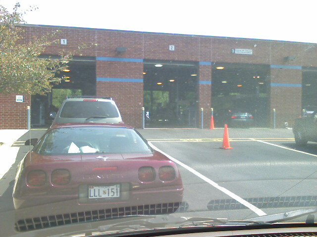
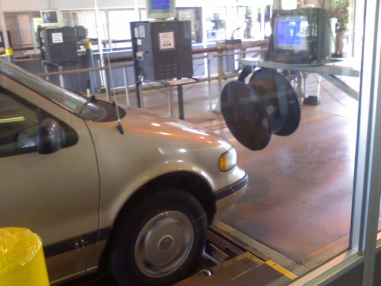
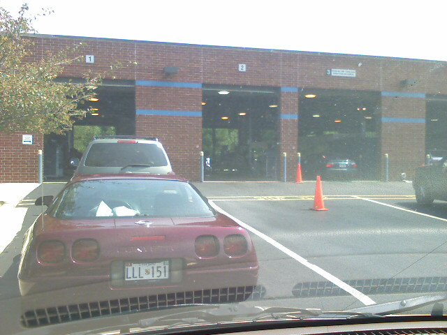
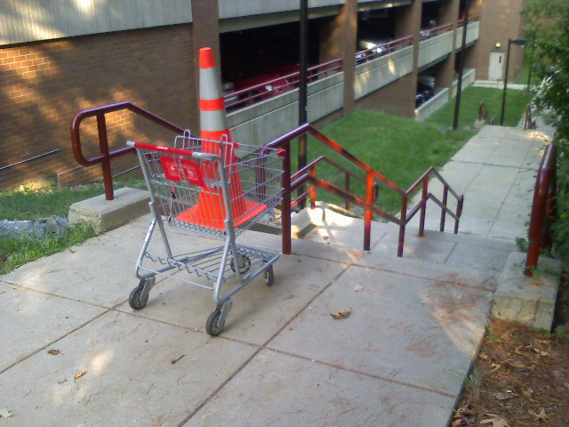
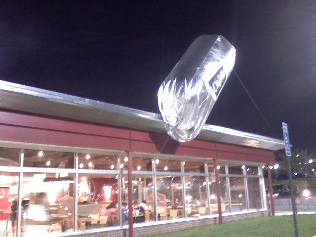
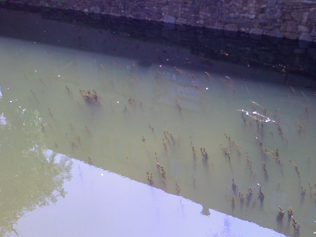
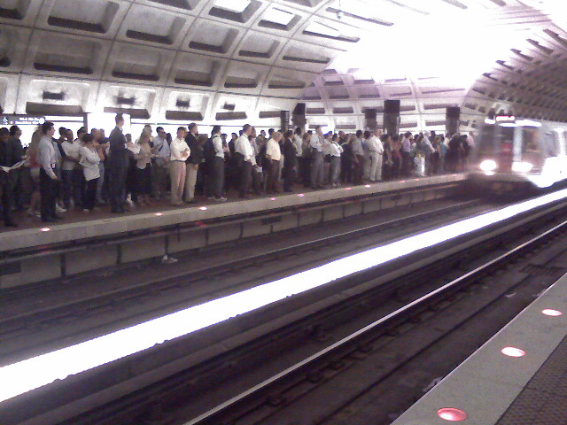

Vehicle Emissions Inspection


The place closes at 1pm and I got there at 12:55! Yes, just sneaked by.
The good news is I passed and won’t have to worry about it for another two years. The only bad news is it took an hour. Meh…



The place closes at 1pm and I got there at 12:55! Yes, just sneaked by.
The good news is I passed and won’t have to worry about it for another two years. The only bad news is it took an hour. Meh…

Interesting sight on my walk to the Glenmont Metro station.

At a Chipotle in Falls Church, Virginia. I hate Virginia.
Coming up and out of the Friendship Heights metro stop. This thing is long, dark, and slighty creepy.

This growth coming from the bottom of the C&O canal looks like something out of a horror movie.

The platform was packed as a train arrived. Unfortunately that train was only going one more stop so nobody got on. Riding the Metro is fierce.
This man was arranging a photo album of wedding photos on the Metro. He stopped half way through his ride and fell asleep. There must have been atleast 200 photos in his hand.